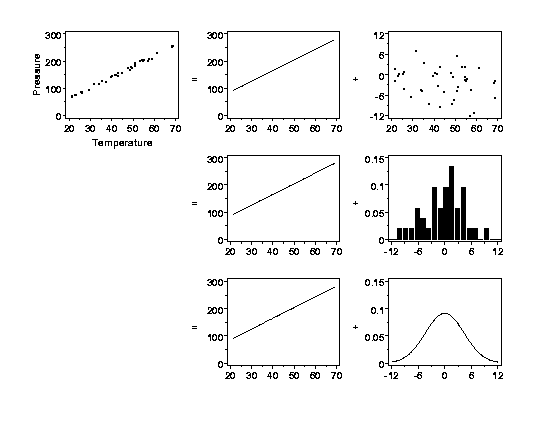
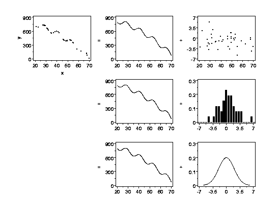
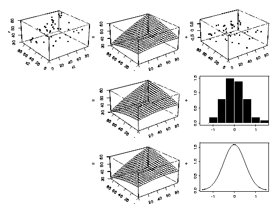

4.
Process Modeling
4.1.
Introduction to Process Modeling
4.1.1.
|
What is process modeling?
|
|
|
Basic Definition
|
Process modeling is the concise description of the total variation in one
quantity, y,
by partitioning it into
- a deterministic component given by a mathematical function of one or
more other quantities, x1, x2, ... ,
plus
- a random component that follows a particular probability distribution.
|
|
Example
|
For example, the total variation of the measured pressure of a fixed amount of
a gas in a tank can be described by partitioning the variability into
its deterministic part, which is a function of the temperature of the gas, plus
some left-over random error. Charles' Law states that the pressure of a gas
is proportional to its temperature under the conditions described here, and in
this case most of the variation will be deterministic. However, due to
measurement error in the pressure gauge, the relationship will not be purely
deterministic. The random errors cannot be characterized individually, but
will follow some probability distribution that will describe the relative
frequencies of occurrence of different-sized errors.
|
|
Graphical Interpretation
|
Using the example above, the definition of process modeling can be graphically
depicted like this:
|
|
Click Figure for Full-Sized Copy
|

|
|
|
The top left plot in the figure shows pressure data that vary
deterministically with temperature except for a small amount of random error.
The relationship between pressure and temperature is a straight line,
but not a perfect straight line. The top row plots on the right-hand side of
the equals sign show a partitioning of the data into a perfect straight
line and the remaining "unexplained" random variation in the data (note
the different vertical scales of these plots). The plots in the middle row of
the figure show the deterministic structure in the data again and a
histogram
of the random variation. The histogram shows the relative frequencies of
observing different-sized random errors. The bottom row of the figure shows
how the relative frequencies of the random errors can be summarized by a
(normal) probability distribution.
|
|
An Example from a More Complex Process
|
Of course, the straight-line example is one of the simplest functions used for
process modeling. Another example is shown below. The concept is identical
to the straight-line example, but the structure in the data is more complex.
The variation in y
is partitioned into a deterministic part, which is a function of another
variable, x,
plus some left-over random
variation. (Again note the difference in the vertical axis scales of the two
plots in the top right of the figure.) A probability distribution describes
the leftover random variation.
|
|
|

|
|
An Example with Multiple Explanatory Variables
|
The examples of process modeling shown above have only one explanatory
variable but the concept easily extends to cases with more than one
explanatory variable. The three-dimensional perspective plots below show
an example with two explanatory variables. Examples with three or more
explanatory variables are exactly analogous, but are difficult to show
graphically.
|
|
|

|


{kind=link}
{kind=link}
{kind=link}